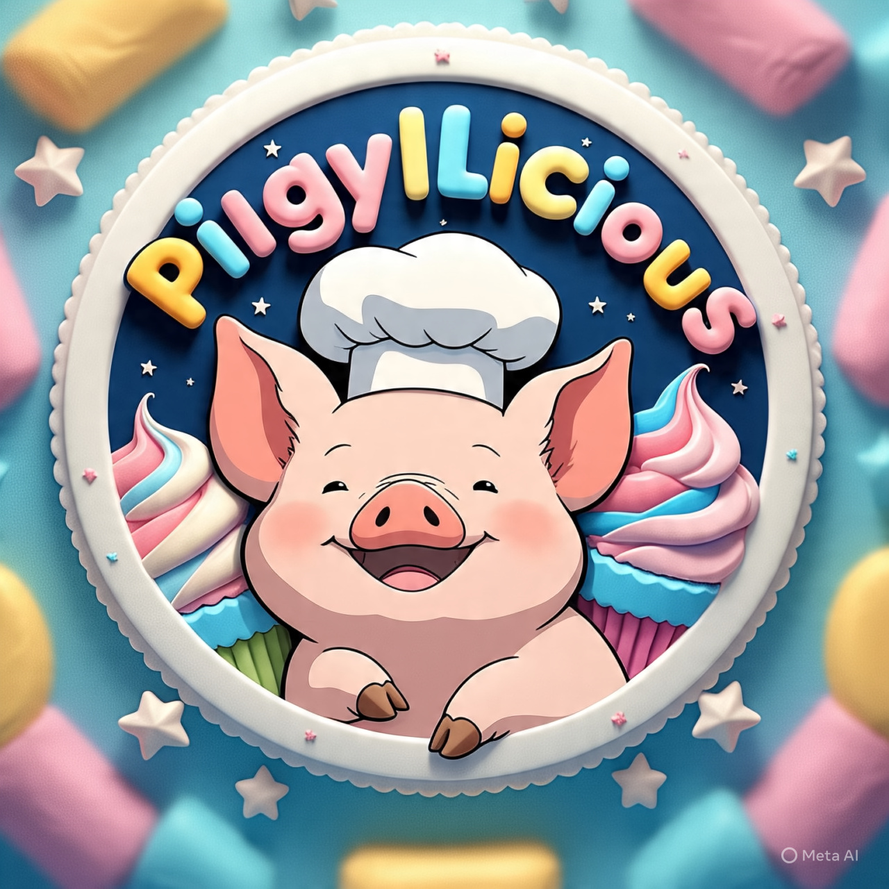

"Cupcakes de Toluca: Un Bocado de Tradición" es una empresa dedicada a la elaboración y venta de cupcakes artesanales de alta calidad en Toluca, Estado de México. Nos diferenciamos por ofrecer sabores innovadores que combinan la tradición mexicana con las tendencias modernas de la repostería, utilizando ingredientes frescos y de primera calidad. Nuestro objetivo es convertirnos en la pastelería líder en Toluca, ofreciendo una experiencia excepcional tanto en sabor como en presentación.
